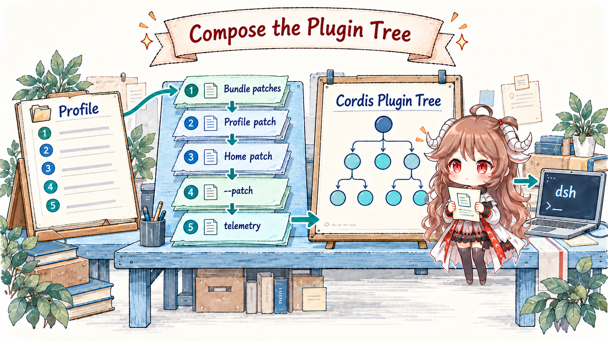
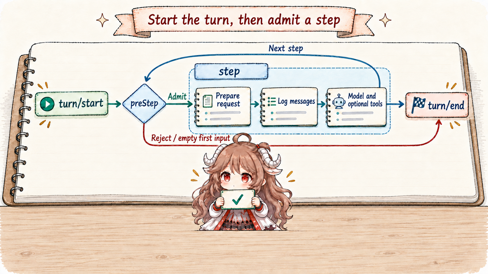
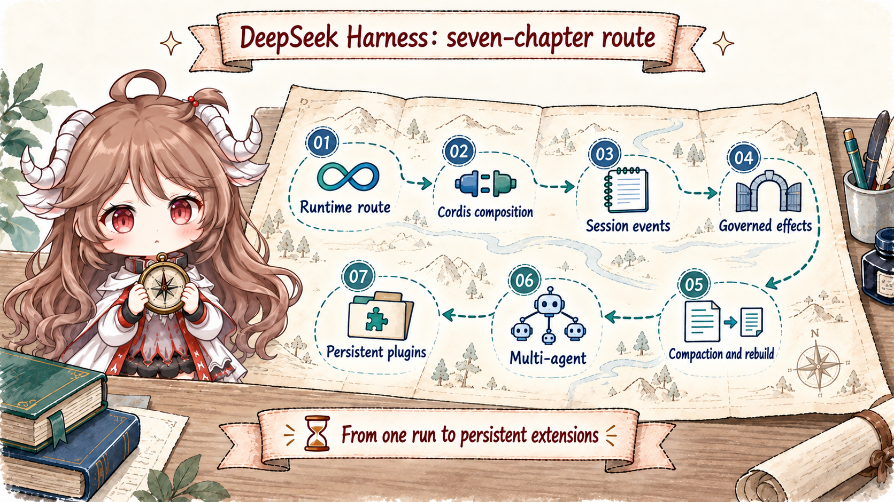

Consider one task: a user opens dsh web and asks the agent to inspect failing tests, repair them, and report the result. The launcher must select a product composition; the runtime must create or restore a session; the model may request several tools; and the interface must expose both progress and the terminal answer.
Reducing this to “browser → LLM → tool → answer” removes the ownership boundaries that make it reliable. Who assembles system instructions, history, and tools before the provider request? Who ensures the durable record crosses a checkpoint before a side effect? After a crash, which events may be replayed, and which effects must remain explicitly uncertain? A harness that cannot answer those questions is only a successful demo path.
Reading contract.After this chapter, you should be able to explain how dsh web selects a profile; how bundle patches become a Cordis plugin tree; how ReactLoopAgent separates turns from steps; why SessionEvent[], surface.nodes, and deriveMessages() are not one chat transcript; and why a tool effect crosses logging, policy, and sandbox boundaries.
Evidence boundary.This chapter is pinned to DeepSeek Harness commit ddefc45fbc7f8e46dd73185e68295696d1297887, tagged dsh-v0.1.6-alpha.2. Types, event ordering, and the base composition come from that snapshot. The repository also calls the project a developer preview, so the evidence supports source contracts—not a claim of production maturity, performance, or certified security.
1. dsh web boots a composition, not a single app
1.1 The CLI selects a profile, then yields the remaining arguments
apps/cli/src/args.ts expands dsh <name> into dsh --profile <name>; web is no longer the sole hard-coded alias. plugin remains a management command, so a profile named plugin needs explicit --profile plugin. Electron exclusively owns desktop, which the public CLI refuses to manage. The launcher parses its own arguments and hands the remainder to the mounted application plugins.
This apparently small CLI boundary removes a large coupling: the top-level launcher does not need to learn every future Web, SDK, ACP, or headless flag. It chooses the plugin tree; plugins define product behavior.
dsh web --no-open
dsh headless "run the tests"
dsh rescue --from-default-profile web
dsh rescue --patch ./extra.yml1.2 A Profile is a mutable instance; a Bundle is a reusable layer

profile-boot.ts and readProfilePatches() make the precedence explicit: bundle patches in dsh.profile.bundles order, the profile's own cordis.patch.yml, the home patch, command-line --patch overlays, and finally the telemetry switch. These are successive patches over one configuration tree, not unrelated configuration files.
A Bundle therefore represents a reusable, publishable product layer such as base or web-app. A Profile is the instance that will actually boot in one user environment. It may install more bundles and override their defaults. --from-default-profile web creates an independent, previously absent profile from the shipped bundle list. It copies neither the existing web profile’s local state nor a continuing inheritance relationship. Whether configuration changes apply immediately depends on HMR: base enables configuration reload by default; headless, SDK, and ACP disable it, while sdk-minimal omits HMR. Plugin Manager reports applied or restart-required results. Writing files is not itself proof that the running tree changed.
| Layer | Fact it owns | What a change affects |
|---|---|---|
| Bundle | A reusable Cordis patch and its dependencies. | The product's default services and plugins. |
| Profile manifest | Which bundles this instance applies and in what order. | Product composition; live application depends on reload support. |
cordis.patch.yml | Instance-level plugin configuration and overrides. | Service parameters, mount points, and local capabilities. |
--patch | A temporary overlay for this invocation. | Diagnostics and one-off compositions without rewriting the base. |
1.3 “Everything is a plugin” means capability seams are replaceable
The repository's architecture document lists model adapters, tools, the session log, and the agent loop as plugins. packages/core/* keeps a small set of kernel contracts: LLM requests and stream chunks, tool schemas and execution, SessionEvent, Agent handles, and scoped plugin context. Providers implement capabilities through Cordis services and events.
The important point is not the number of npm packages. Consumers depend on a capability; a provider supplies it within a scope. The plugin tree determines visibility, disposal, and interception order. A model adapter, persistence layer, or agent loop can change without teaching every upper layer a new implementation type.
2. A turn enters ReactLoopAgent through a Session
2.1 Session becomes the container for runtime facts
A Web or ACP surface does not call llm.stream() directly. It obtains an Agent handle from a registry, associated with a Session. The Session owns append-only SessionEvent[], the active surface, request headers, and scoped context. Persistence plugins subscribe to session/event and are awaited at the session/flush observation barrier.
This gives “model-visible” a strict foundation. A fact that should participate in recovery, projection, or a future request must first become a session event. State that exists only in a local variable, a console line, or a UI store is not recoverable agent history.
2.2 A turn contains steps; a step advances one model interaction

ReactLoopAgent.turn() writes turn/start before claiming inbox input and running preStep(). Only an admitted advance writes step/start. Rejection, empty initial input, cancellation, or failure can close a turn with zero steps. Entered steps close in finally, and the turn closes with a structured reason. Completion, output limits, blocked, aborted, and error are different outcomes: turn/end alone does not prove task success.
A turn is therefore not one HTTP request or one provider call. Repairing tests may require four model–tool exchanges and still remain one turn. A step is the observable unit of advancement inside it. If request-error policy returns retry, another model attempt can run inside that same step rather than opening a new turn for every retry.
This sequence sketch omits internal tool scheduling while retaining step admission and request settlement boundaries:
turn/start
preStep: claim input, assemble capabilities, decide enter / reject
enter → step/start
prepareRequest → system/message → user/message
request/header → model attempt → message/attempt settlement → optional tools
If request policy permits: retry inside the same step
step/end → enter another step when needed
turn/end { reason } // zero steps are also possible2.3 preStep() claims input and assembles capabilities
preStep() claims the inbox target, gathers prompt and tools through system-prompt assembly, projects runtime context, then executes the agent/pre-step waterfall. It may reject advancement or change the admitted messages. Phase management reserves a single driver; claiming moves queued input into this advance so it is not admitted twice.
System instructions and tools are not necessarily frozen when the Agent object is constructed. Plugins can supply or filter them by session, turn, step, and runtime scope. That flexibility makes assembly order part of product semantics; Part II will read how Cordis patches establish the order.
3. The model sees an event projection, not the raw log
3.1 buildRequest() fixes the request envelope before dispatch
Inside a step, prepareRequest() first runs agent/request and binds the provider call to obtain the current route’s actual capabilities. The loop then commits system/message and user input under that capability before buildRequest() calls Session.deriveMessages(). The dispatch path fixes and freezes the request. The streaming path publishes live agent/assistant-stream frames, then settles each attempt by embedding its stream in assistant/message or assistant/attempt. Already displayed frames are not proof of durable messages.
buildRequest() also logs the non-history request envelope as request/header: provider/model configuration, tools, and adapter defaults have a canonical recovery snapshot. System text now belongs to the surface rather than the header. A separate request/context records route capacity and system-update capability without participating in header equality or replacing the currently bound provider capability. Conversation messages alone cannot prove which tool set and model configuration produced an in-flight request.
3.2 One Session maintains three distinct views

Session maintains three related forms:
- Raw event log:ordered
SessionEvent[]retains turn, step, settled assistant streams, tool, header, and compaction facts. - Surface projection:
surface.nodesexpresses the active conversation surface. Compaction can replace an old surface range with a new generation without deleting the raw events. - Model messages:
deriveMessages()converts only eligible surface nodes intoMessage[]. The four message types include system messages;turn/startandassistant/attemptdo not directly enter provider history.
The Web UI may consume more events for progress, tokens, tool state, and diagnostics. “Visible to the user,” “visible to the model,” and “available for recovery” are therefore separate properties derived from one source—not interchangeable transcripts.
4. Tool calls cross durability and governance boundaries
4.1 The model proposes an action; the runtime owns the effect

When the LLM stream emits a structured tool call, the loop records it before handing it to the tool service. The tool scheduler arranges actual dispatch, and the base bundle mounts checkpoint policy, approval, sandbox, and result-pruning plugins. A call first crosses ordered pre-execute decisions, including conditional approval and a guard that can refuse dispatch. Admitted calls then flush before the tool body. These stages answer durability, policy, user-decision, execution-environment, and result-projection questions separately. Parallel-capable tool bodies may overlap, while results still commit in model-call order; Part IV covers the scheduler.
These cannot collapse into one “security check.” Approval is an interactive decision, not filesystem isolation. A sandbox restricts an environment but does not know the user's intent. session/flush proves that the log crossed a durability barrier; it does not make an action authorized. Separate owners let failure resolve to rejection, waiting, retry, or deliberate stop.
4.2 Recovery is safe only if uncertainty can be represented

The default JSONL persistence appends events and can use zstd compression. Historical formats first migrate through the built-in chain to v3. On resume, Session.fromRestore() validates seed events, reconstructs the surface and request header, and lets the Agent continue from durable state. The dangerous crash falls after an external side effect but before a durable tool/result.
repair.ts distinguishes TOOL_NOT_STARTED from TOOL_OUTCOME_UNKNOWN. The first means the durable prefix contains no recorded start for that call. The second means a tool/call was recorded without a durable result, which cannot establish whether an external action occurred. Repair adds synthetic error results and missing step/turn closers to restore valid pairing. For unknown outcomes, the synthetic message permits considering retry for read-only or idempotent operations; effects require checking external state or asking the user first. This is decision guidance in the recovery record, not an isolation mechanism forbidding every retry.
5. Web and ACP are surfaces over the same runtime kernel
5.1 Product interfaces consume handles and events; they do not own the loop
The architecture document places Web, headless, SDK, and ACP in profile and bundle layers. SDK also has sdk-minimal, which does not stack base; Electron runs the shared Web application through its own Host. They choose input, presentation, and delivery protocols while sharing the core Agent, Session, LLM, and tool capability seams. The browser is not the Agent's owner; it is a consumer that can create, restore, send to, and observe an Agent handle.
This is why DSH deserves a source series of its own. Its central question is not how one agent product accumulates features, but how several product surfaces reuse one set of runtime semantics. If Web owned one authoritative history and ACP another, recovery and tool governance would drift by entry point. The event-sourced Session forces them back onto one fact stream.
5.2 The complete path has seven handoff points
dshparses launcher options and selects a Profile.- The Profile combines Bundles, instance patches, and invocation overlays into a Cordis tree.
- A product surface creates or restores an Agent handle and Session through the registry.
ReactLoopAgentopens a turn, claims inbox input, assembles prompts and tools, then decides whether a step enters.deriveMessages()projects history; the LLM service emits live frames that the loop settles as messages or failed attempts.- Tool calls pass policy and conditional approval, flush before dispatch, execute within the configured restrictions, and return results to Session.
- The loop appends
turn/endwith an explicit reason; Web or ACP observes and delivers from the same event source. NeitherwhenIdle()nor the turn boundary itself waits for durability; consumers reading storage afterward must explicitly flush.
6. The six boundaries opened by the remaining chapters

Part I establishes the coordinate system. The next six chapters follow the same commit in dependency order:
- Cordis composition:how patches, services, scopes, and lifecycle create a replaceable but ordered product tree.
- Event-sourced sessions:how “Model-visible means logged” becomes surface projection and recovery invariants.
- Governed effects:how checkpoints, approval, sandboxing, pruning, and crash repair form an execution protocol.
- Compaction:why it replaces a surface rather than deleting raw events, and how request headers support cache-friendly reconstruction.
- Multi-agent work:how spawn/fork, continuable subagents, PTC workflow, Ralph, and experimental Team differ in session ownership and delivery.
- Persistent plugin extension:how two read-only Inspect tools and
plugin_managerpersist Bundles in a profile, and why saving, Host activation, and browser verification are separate facts.
Seen from this route, “everything is a plugin” is no longer marketing shorthand. Model adapters, tools, state, the loop, and interfaces are replaceable, but only while they obey shared event, scope, and side-effect contracts. That is what keeps composability from erasing explainability.
Source references
- Project README and Architecture: product positioning, plugin tree, and turn flow.
- profile-boot.ts and the CLI README: Profile, Bundle, and patch precedence.
- agent.ts: the ReactLoopAgent turn/step, request, and stream path.
- Session implementation and Session contract: events, surface, message projection, and recovery.
- Base bundle composition: default persistence, approval, sandbox, compaction, subagent, and agent-loop plugins.